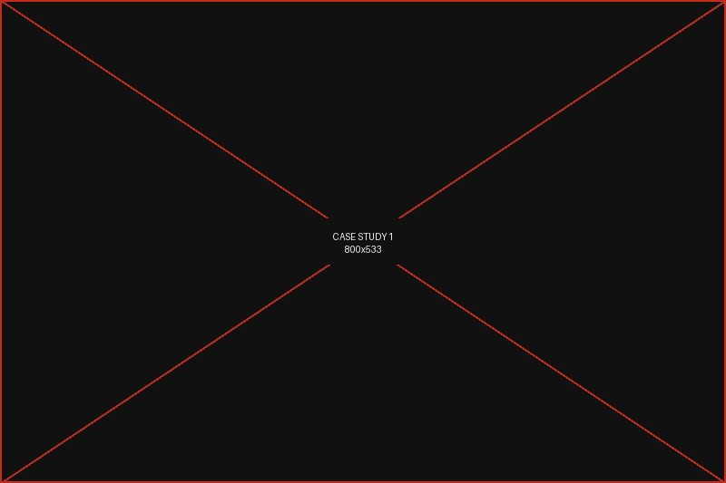

Collaborate · Create
Enterprise technology company
- Challenge
- A long-running giving program with high spend, low participation, and no way to demonstrate community outcomes to the board.
- Approach
- Rebuilt the program around three anchor community partners, moved from cash grants to skilled volunteering, and defined shared outcome metrics with each partner.
- Outcome
- PLACEHOLDER — insert the verified outcome statement Tyler approves for public release.
90% Employee participation